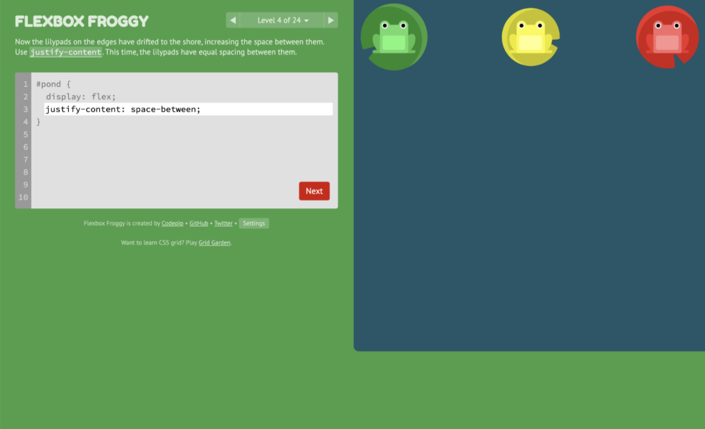

Flexbox Froggy
The interface design of Flexbox Froggy is very colorful which attracts user attention. The visuals are large and make the inputs of the user and shows clear change. Because of this, the overall website is both feasible in usability and satisfying in user experience.